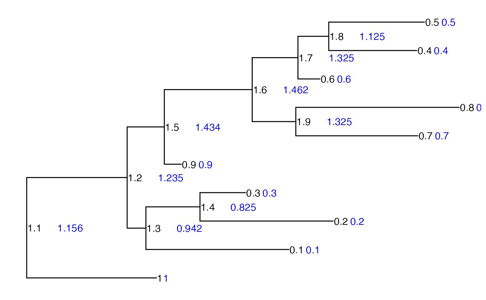

treeScore takes the tree structure into account when calculating the
score for an internal node. If an internal node A has two children B and C,
(A->B, A->C), the new score at node A would be calculated as the
weighted mean of the scores in the whole family (A, B and C). The weights are
based on the number of descendant leaves. For example, if the node B has 2
descendant leaves, and C has 3 descendant leaves, then A would have 5. The
calculation would be \((Score\_A * 5 + Score\_B * 2 +Score\_C * 3)/10\).
The generation starts from the leaves and the new generated scores are used
to update those in higher level of the tree until the root is reached.
Arguments
- tree
A
phyloobject.- score_data
A data frame that includes at least two columns. One column stores the number of the node, and the other stores the original score of the corresponding node.
- node_column
The name of the column of
score_datathat contains the numbers of the nodes.- score_column
The name of the column of
score_datathat contains the original scores of the nodes.- new_score
The name of the column that stores the generated score.
Value
A data.frame similar to score_data, but with an
extra column (named new_score) containing the weighted scores.
Examples
suppressPackageStartupMessages({
library(TreeSummarizedExperiment)
library(ggtree)
library(dplyr)
})
## tree
data(tinyTree)
ggtree(tinyTree, branch.length = "none") +
geom_text2(aes(label = node))
 ## score
exScore <- data.frame(nodeNum = seq_len(19), score = (seq_len(19))/10)
## Calculate new score based on the tree
newScore <- treeScore(tree = tinyTree, score_data = exScore,
node_column = "nodeNum",
score_column = "score",
new_score = "wScore")
## Visualize the result
## The original scores are in black texts and the new ones in blue
df <- newScore |>
rename(node = nodeNum) |>
mutate(score = round(score, 3),
wScore = round(wScore, 3))
ggtree(tinyTree) %<+%
df +
geom_text2(aes(label = score), hjust = -0.05) +
geom_text2(aes(label = wScore, hjust = -1.2),
color = "blue")
## score
exScore <- data.frame(nodeNum = seq_len(19), score = (seq_len(19))/10)
## Calculate new score based on the tree
newScore <- treeScore(tree = tinyTree, score_data = exScore,
node_column = "nodeNum",
score_column = "score",
new_score = "wScore")
## Visualize the result
## The original scores are in black texts and the new ones in blue
df <- newScore |>
rename(node = nodeNum) |>
mutate(score = round(score, 3),
wScore = round(wScore, 3))
ggtree(tinyTree) %<+%
df +
geom_text2(aes(label = score), hjust = -0.05) +
geom_text2(aes(label = wScore, hjust = -1.2),
color = "blue")
